FILES AND EXCEPTIONS
introduction
FILE INPUT/OUTPUT
- For program to retain data between the times it is run, you must save the data
- Data is saved to a file, typically on computer disk
- Saved data can be retrieved and used at a later time
- "Writing data to" : saving data on a file
- Output file: a file that data is written to
- "Reading data from" : process of retrieving data from a file
- Input file: a file from which data is read
Write Data To File
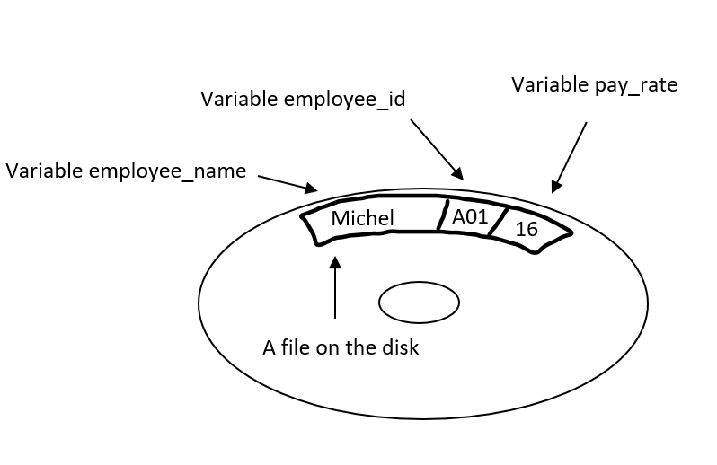 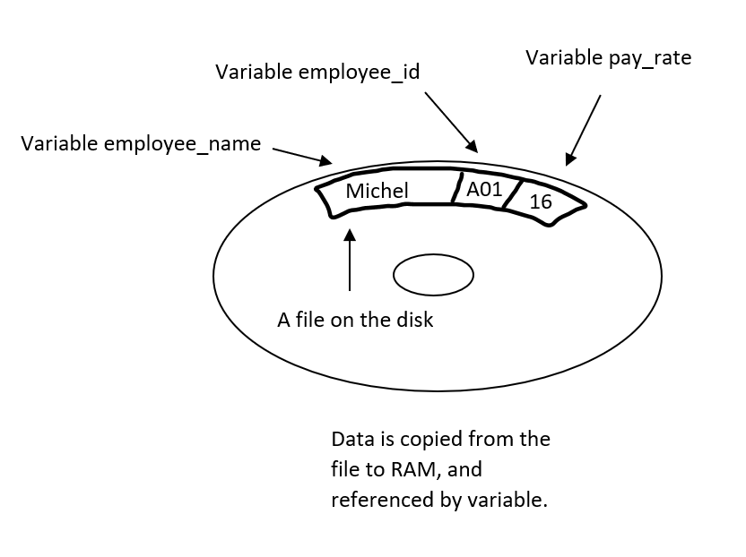Type Of Files
In general, two types of files
- 1. Text file: contains data that has been encoded as text
- 2. Binary file: contains data that has not been converted to text
Two ways to access data stored in file
- Sequential access: file read sequentially from beginning to end, can't skip ahead
- Direct access: can jump directly to any piece of data in the file
File
There are always three steps that must be taken when a file is used by a program.
- Open the file- Opening a file creates a connection between the file and the program. Opening an output file usually creates the file on the disk and allows the program to write data to it. Opening an input file allows the program to read data from the file.
- Process the file- In this step data is either written to the file (if it is an output file) or read from the file (if it is an input file).
- Close the file When the program is finished using the file, the file must be closed. Closing a file disconnects the file from the program.
Input / Output
Open File
file_variable = open(filename, mode)
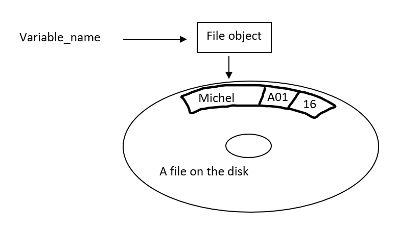File Mode
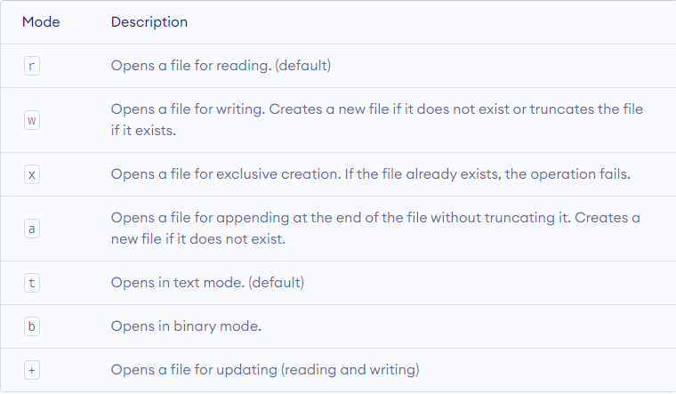File Write
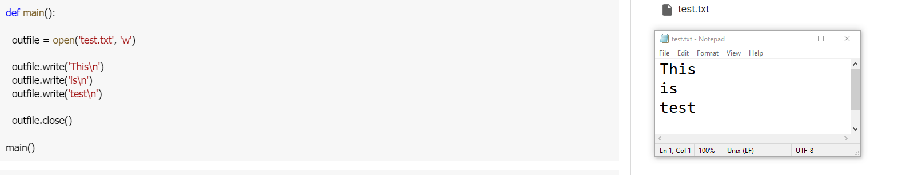File Read
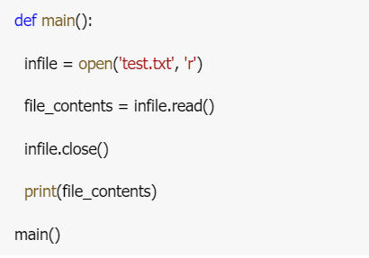Read Line

Strip Newline
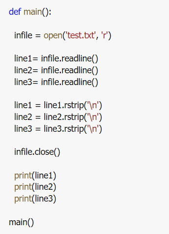Example
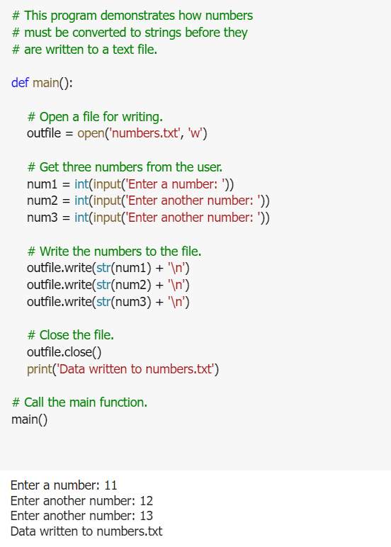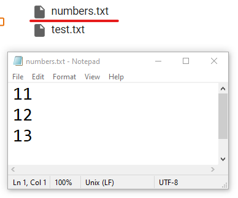
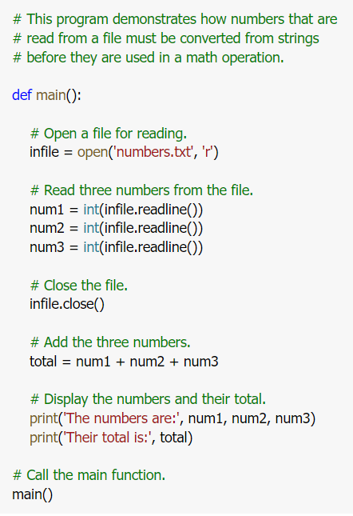
Using loop to process file
Detecting End Of File


Example Using Loop To Process File
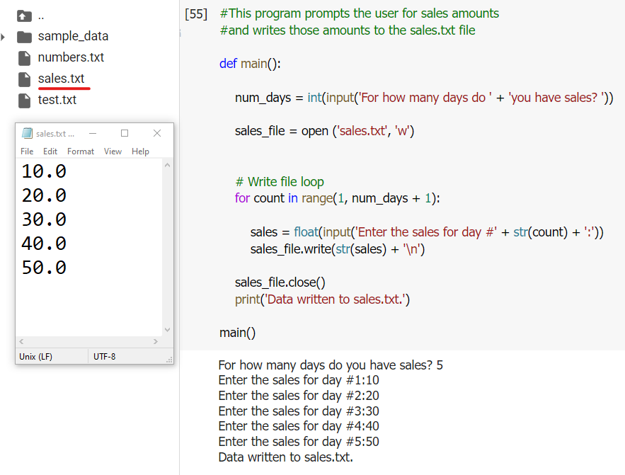Example Using Loop To Process File (while loop)
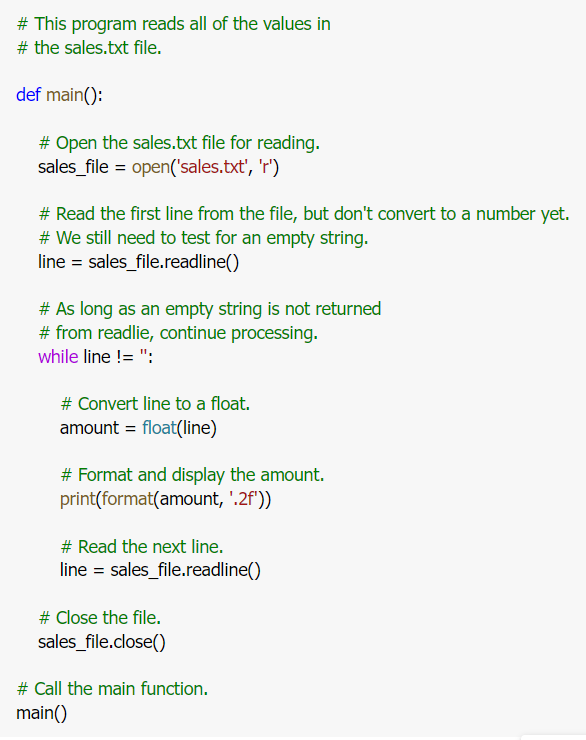Example Using Loop To Process File (while loop)
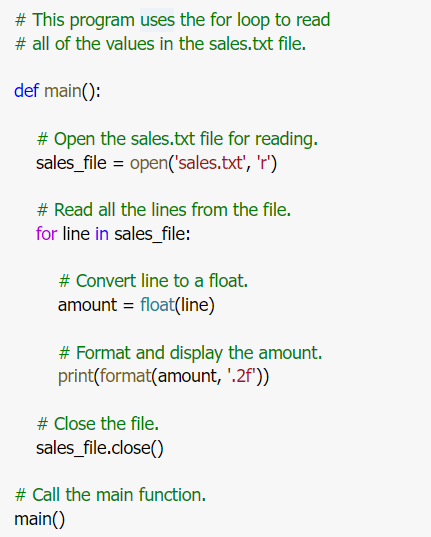processing record
- Record: set of data that describes one item
- Field: single piece of data within a record
- Write record to sequential access file by writing the fields one after the other
- Read record from sequential access file by reading each field until record complete
Record
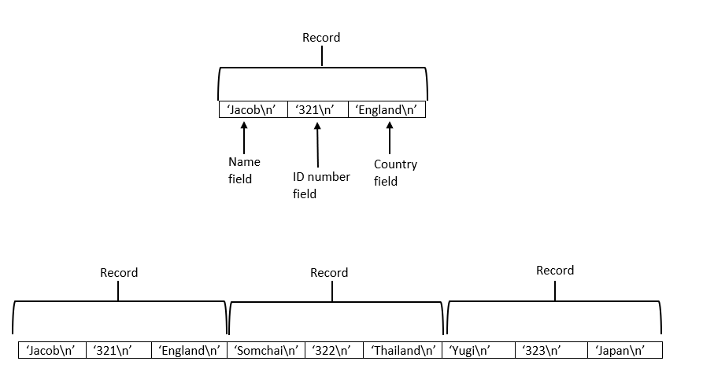Processing Records
When working with records, it is also important to be able to:
- Add records
- Display records
- Search for a specific record
- Modify records
- Delete records
Example Input And Write Record
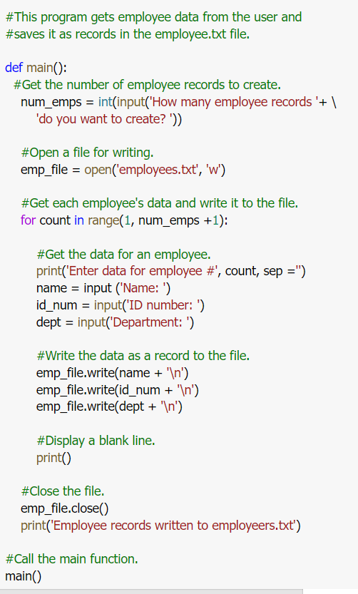import os

EXCEPTIONS
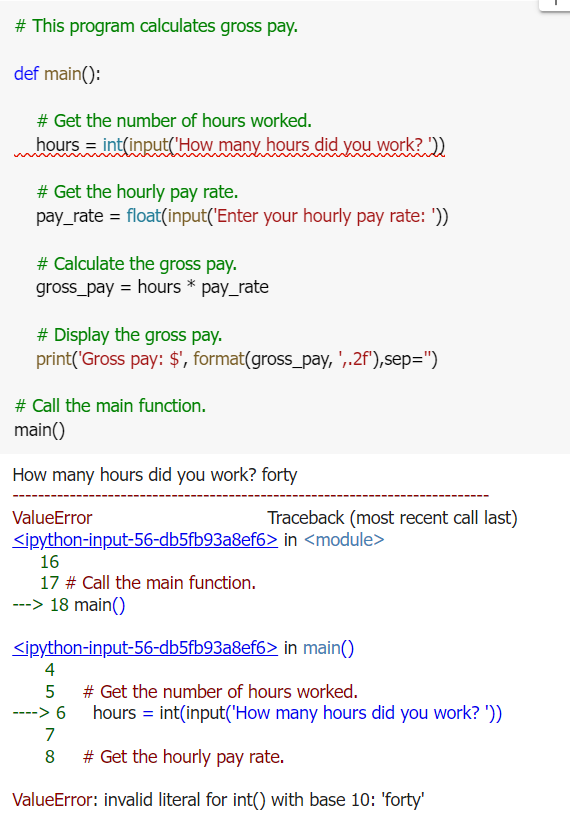- Exception: error that occurs while a program is running
- Usually causes program to abruptly halt
- Traceback: error message that gives information regarding line numbers that caused the exception
- Indicates the type of exception and brief description of the error that caused exception to be raised
- Exception handler: code that responds when exceptions are raised and prevents program from crashing
- In Python, written as try/except statement
- Try suite: statements that can potentially raise an exception
- Handler: statements contained in except block
- General format:
- Try:
-
statements
- except exceptionName:
-
statements